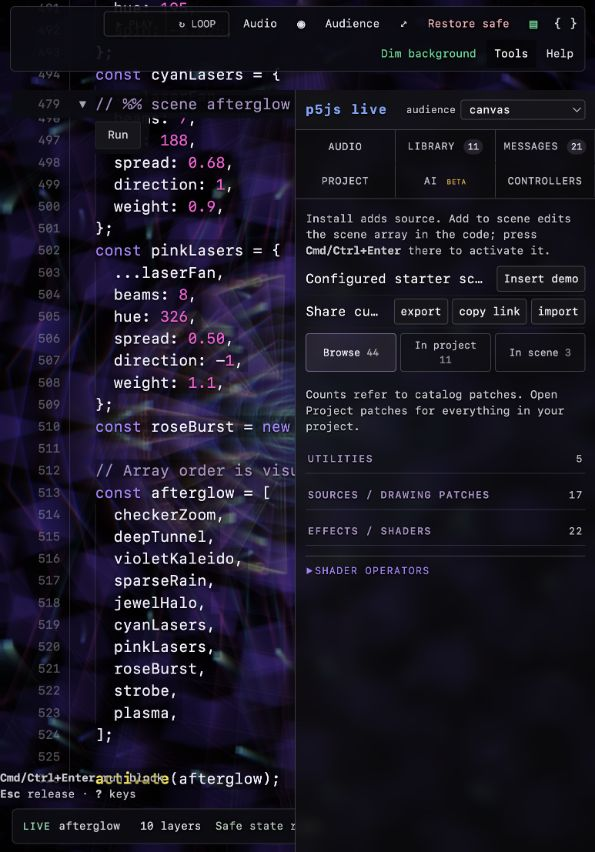
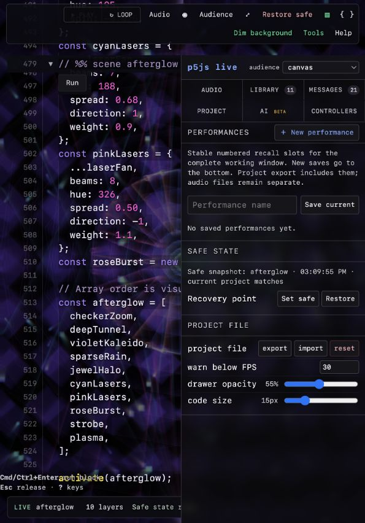
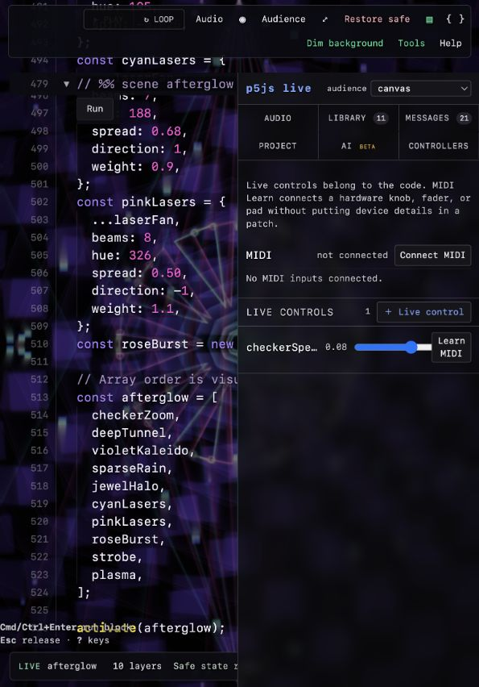

Tools, within reach.
Keep the actions you perform close at hand. Give browsing room to breathe. Put setup and explanations where you need them.
Make the useful part
the first thing you see.
01Navigate by task
Library, Controls, Audio, and Performances are the main destinations. Place preferences, AI configuration, and message history in secondary navigation. Keep active errors directly accessible.
02Let controls breathe
Show the full parameter name and exact value above a wide slider. Place MIDI setup below live controls. Use clear labels, visible focus, and a stronger panel background.
03Protect the editing rhythm
Search first in Library. Move sharing into patch actions. Keep source changes deliberate: install, add to scene, then review and run. Use the full width on narrow screens.
Live controls
MIDI connection & mappings
Device connection and mapping actions would live here, below the controls you use during a set.
Preview values only. Your running scene is unchanged.
Find a patch
Color treatment and flowing distortion.
Layer a fan of colored beams.
A tunnel of receding geometric rings.
3 sample patches
Proposed action flow: Install → Add → Review & run.
Audio input
Source selection and signal status belong together. Analysis settings can stay collapsed until needed.
File playback and loop controls would appear here.
Analysis settings
Smoothing and auto-gain settings would live here.
This concept does not access audio devices.
Your performances
Save and recall complete performances in one place.
Scene identity and recall action stay together.
Project files & recovery
Import, export, and safe-state recovery stay grouped here. Reset gets a separate, clearly labeled action.
Example layout only; this does not create a saved performance.
Try the section buttons, search, and sliders. This is a layout prototype, independent of the instrument.
Three views, three opportunities.
Original captures at 595 × 852. Open any image to inspect the full screenshot.

Library
The explicit source workflow is useful. But instructions, sharing, and demo insertion push browsing halfway down the panel. Lead with search and patches.

Project
Performance saving and recovery are visible. Code size, opacity, and FPS warnings need a Settings home. Separate reset from routine file actions.

Controllers
Put controls above connection setup. Widen sliders and retain full labels. The current continuous slider also lacks an accessible name, confirmed in the accessibility tree and source.
Small changes, in a useful order.
1 / Read & operate
Responsive drawer, opaque backing, clear selected state, full control labels, and accessible slider names.
2 / Find & adjust
Library search, controls above MIDI setup, wide sliders, and less introductory content above actions.
3 / Organize & verify
Separate preferences and file actions. Check narrow and wide layouts, keyboard navigation, long names, and empty states.